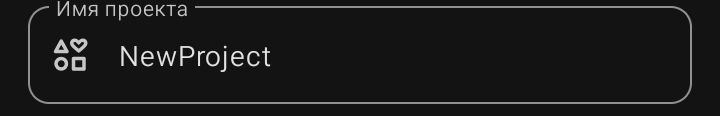

Имя проекта — это внутреннее название, которое используется только внутри Sketchware Pro 7 для организации списка проектов. Пользователь его не видит: ни на рабочем столе, ни в Google Play.
Поле расположено четвёртым блоком сверху, с подписью «Имя проекта» в верхнем левом углу рамки и иконкой из трёх фигур (квадрат, круг, треугольник) слева. Внутри — серая подсказка вроде NewProject2.
Что можно и нельзя писать
· Можно: латиницу, кириллицу, цифры, пробелы.
· Желательно: коротко и понятно — чтобы в списке проектов ты сразу находил нужный.
· Нельзя: оставлять поле пустым.
Чем отличается от имени приложения
·
Имя проекта
— видишь только ты в списке проектов Sketchware.
·
Имя приложения
— видит пользователь под иконкой и в Google Play.
Эти два поля независимы. Можно назвать проект коротко (WeatherApp), а имя приложения задать человечным («Погода на сегодня»).
⚠️ Важно: имя проекта связано с именем папки на устройстве. Не переименовывай папку проекта вручную через файловый менеджер — Sketchware потеряет связь с проектом, и он не откроется.
💡 Совет: используй английские короткие имена без пробелов (ManuList, Calc, Notes2026). Это удобнее, если ты часто правишь файлы проекта вручную или синхронизируешь папку с облаком.
💡 Совет: если делаешь несколько версий одного проекта, добавляй суффикс: ManuList_v1, ManuList_v2. Так ты не запутаешься и не перезапишешь рабочую версию.
❌ Частая ошибка: путать это поле с «Имя приложения» и вписывать туда длинное название с пробелами и эмодзи — работать будет, но в списке проектов станет неудобно ориентироваться..